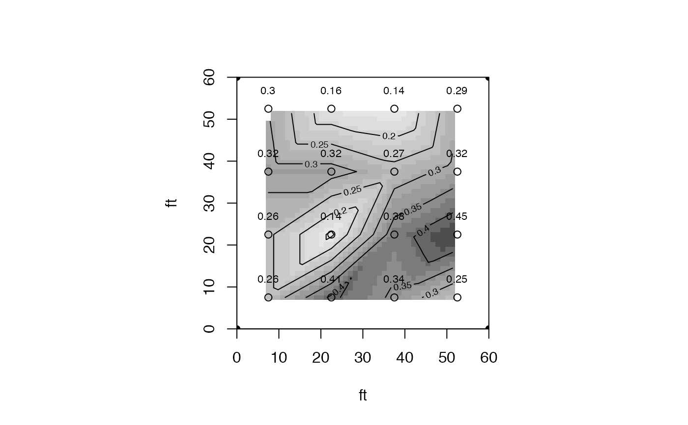

plotss.Rdplots a densigram with optional contour plot of catch can depths, with an option to label points. Both contour and point labeling are invoked by default (TRUE).
plotss(cdata,sploc,con=TRUE, xlab="",ylab="",title="",labelpoints=TRUE, imcol=FALSE,edastat=FALSE)
| cdata | n x 3 matrix of catch can data; 1st column x, 2nd column y can locations, 3rd column catch depths |
|---|---|
| sploc | n x 2 matrix of sprinkler location data; 1st column xi, second column yi. i=4 for 4 sprinklers with cans in-between. |
| con | Logical; TRUE to overlay contour plot on densigram, default is TRUE |
| xlab | label for x axis of plot |
| ylab | label for y axis of plot |
| title | main title for plot, default is FALSE (no title) |
| labelpoints | logical; plot amounts at can locations? Default is TRUE. |
| imcol | logical; color densigram? Default is FALSE for gray-scale. |
| edastat | call eda.stat function for stats on catch depths? Default is FALSE. |
densigram (from interp with optional contour plot overlay) and optional summary catch can statistics.
Garry Grabow glgrabow@ncsu.edu
requires interp package
# set sprinkler locations (ft here) sprinklerx<-c(0,0,60,60) sprinklery<-c(60,0,60,0) sploc<-cbind(sprinklerx,sprinklery) #construct can data matrix gage.space<-15 x<-c(rep(7.5,4),rep(22.5,4),rep(37.5,4),rep(52.5,4)) y<-rep(seq(52.5,7.5,-gage.space),4) depth<-c(0.3,0.32,0.26,0.26,0.16,0.32,0.14,0.41, 0.14,0.27,0.38,0.34,0.29,0.32,0.45,0.25) cdata<-cbind(x,y,depth) plotss(cdata,sploc,xlab="ft",ylab="ft")